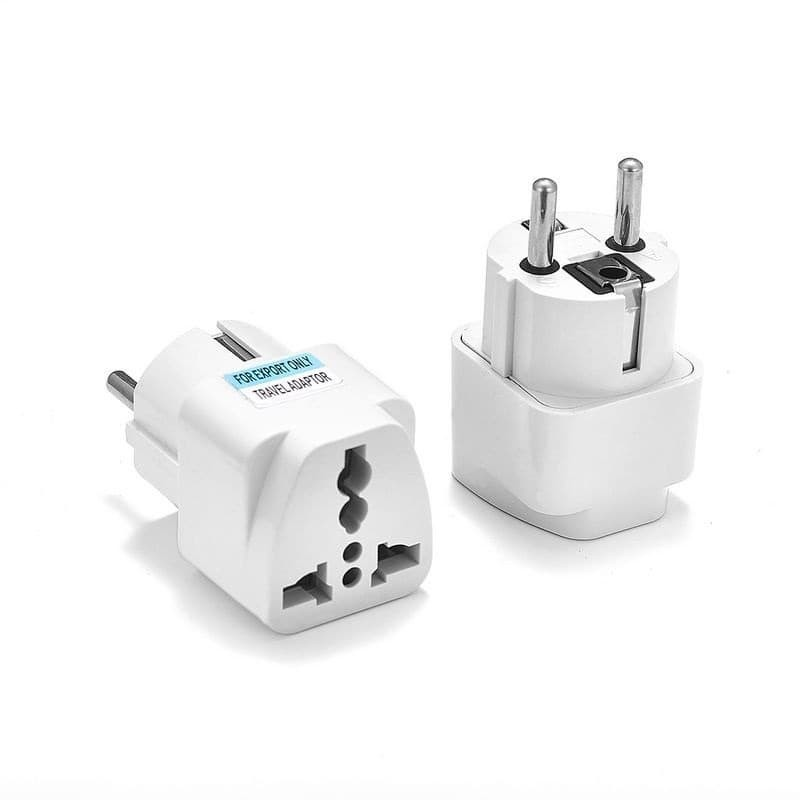

返回首頁 / Home
出國注意事項
Travel Notices
印尼・沙馬林達（Samarinda, Indonesia）
💵 美金換印尼盾
USD → IDR Exchange
粗估匯率 1 USD ≈ 17,800 IDR（實際依當天現場匯率為準）
Approx. rate 1 USD ≈ 17,800 IDR — actual rate depends on the money changer that day
| 美金 USD | 約可換 IDR |
|---|
| 1 | Rp 17,800 |
| 10 | Rp 178,000 |
| 50 | Rp 890,000 |
| 100 | Rp 1,780,000 |
- ✅ 優先攜帶 USD 50 / 100 大鈔
Bring larger bills (USD 50/100) if possible
- ✅ 鈔票需乾淨、平整、無破損
Bills must be clean, crisp, and undamaged
- ⚠️ 舊鈔、折痕、污損可能被拒收或匯率較差
Old, folded, or marked bills may be rejected or get a worse rate
- 💡 在台灣換美金時，可向銀行要求較新的 USD 100 鈔票
Ask your bank in Taiwan for newer USD 100 notes
🌴 沙馬林達基本資訊
About Samarinda
- 印尼東加里曼丹省首府
Capital of East Kalimantan Province, Indonesia
- 主要語言：印尼語，英語使用程度不如觀光城市
Main language: Indonesian — English is less common than in tourist cities
- 📱 建議事先下載 Google 翻譯，並保持網路暢通
Download Google Translate beforehand and keep mobile data on
🔐 治安提醒
Safety Tips
整體可正常旅遊，但仍建議注意以下幾點：
Generally safe to travel, but please keep these in mind:
- 人多的市場、商場注意手機及錢包
Watch your phone and wallet in crowded markets/malls
- 晚上避免前往偏僻、昏暗巷弄
Avoid dark, isolated alleys at night
- 不要攜帶大量現金在身上
Don't carry large amounts of cash
- 團體活動盡量不要單獨行動
Stay with the group, avoid going off alone
🌡️ 10月天氣與穿著建議
October Weather & What to Wear
關鍵字：熱、濕、容易下雨
In short: hot, humid, and rainy
- 🌡️ 白天約 32～35°C
Daytime highs around 32–35°C
- 💦 濕度高，體感悶熱
High humidity, feels hot and sticky
- 🌧️ 午後可能突然出現大雨
Sudden heavy rain possible in the afternoon
- ☀️ 紫外線強
Strong UV
建議：薄、透氣、快乾＋防曬＋防雨
Suggested: light, breathable, quick-dry clothing + sun protection + rain gear
👕 建議穿著
Clothing Suggestions
日常 / Daily wear
- 輕薄、透氣、排汗衣物
Light, breathable, sweat-wicking clothes
- 薄長袖 1～2 件
1–2 light long-sleeve shirts
- 輕薄長褲
Light long pants
- 薄外套（飯店、商場、車內冷氣強）
A light jacket (hotels, malls, and cars have strong A/C)
避免 / Avoid
- 厚重牛仔褲
Heavy jeans
- 不易乾的衣服
Slow-drying fabrics
宗教場合 / Religious sites
- 避免無袖、超短褲等過於暴露服裝
Avoid sleeveless tops, very short shorts, etc.
- 進入清真寺需注意肩膀、膝蓋遮蔽
Cover shoulders and knees when entering a mosque
- 女性可準備一條薄絲巾
Women may want to bring a light scarf
👟 鞋子建議
Footwear
- 推薦：防滑、快乾、防水的運動鞋／健走鞋，或方便穿脫的鞋子
Recommended: non-slip, quick-dry, water-resistant sneakers/walking shoes, or slip-on shoes
- 下雨後路面可能積水，部分宗教場所需要脫鞋
Streets may flood after rain; some religious sites require removing shoes
🔌 電壓與插座規格
Voltage & Plug Type
| 項目 Item | 印尼 Indonesia | 台灣 Taiwan |
|---|
電壓
Voltage | 230V（50Hz） | 110V |
插座型式
Plug Type | 歐規 C型／F型
Type C / F (round pins) | A型（扁平雙插）
Type A (flat pins) |
台灣常用的 A 型扁平插頭無法直接插入印尼插座，請自備轉接頭（如下圖）。
Taiwan's flat Type A plugs do not fit Indonesian outlets — please bring a travel adapter like the one below.

🧳 最簡單記法
Quick Summary
去沙馬林達 =「美元要新、天氣很熱、午後會下雨、穿著保守、注意防蚊」
Samarinda in short: newer USD bills, very hot, afternoon rain, dress modestly, watch out for mosquitoes
必備 5 樣 / 5 must-haves
- 💵 新版 USD 50/100
Newer USD 50/100 bills
- 👕 輕薄排汗衣
Light sweat-wicking clothes
- 🧥 薄外套
Light jacket
- 🌧️ 雨具／快乾鞋
Rain gear / quick-dry shoes
- 📱 Google 翻譯＋網路
Google Translate + mobile data